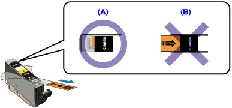
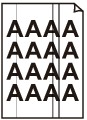

No Printing Results
No Printing Results

Printing Is Blurred
Colors Are Wrong
White Streaks
-
Check 1: Did you confirm the paper and print quality settings?
-
Check 2: Check the status of ink tanks. Replace the ink tank if the ink has run out.
-
Check 3: Is the orange tape or protective film remaining?
Make sure that all of the protective film is peeled off and the L-shape air hole is exposed, as illustrated in (A).
If the orange tape is left as in (B), pull the orange tape and remove it.
 -
Check 4: Print the Nozzle Check Pattern and perform any necessary maintenance operations such as Print Head Cleaning.
Print the Nozzle Check Pattern to determine whether the ink ejects properly from the print head nozzles.
Refer to Routine Maintenance for the Nozzle Check Pattern printing, Print Head Cleaning, and Print Head Deep Cleaning.
-
If the Nozzle Check Pattern is not printed correctly:
Check to see if a particular color's ink tank is not empty.
If the Nozzle Check Pattern is not printed correctly though ink is sufficient, perform the Print Head Cleaning and try printing the Nozzle Check Pattern again.
-
If the problem is not resolved after performing the Print Head Cleaning twice:
Perform the Print Head Deep Cleaning.
If the problem is not resolved after performing the Print Head Deep Cleaning, turn off the machine and perform another Print Head Deep Cleaning after 24 hours. When you turn the machine off, do not unplug it from the power supply.
-
If the problem is not resolved after performing the Print Head Deep Cleaning twice:
If Print Head Deep Cleaning does not resolve the problem, the Print Head may be damaged. Contact the service center.
-
-
Check 5: When using paper with one printable surface, make sure that the paper is loaded with the printable side facing up.
Printing on the wrong side of such paper may cause unclear prints or prints with reduced quality.
Refer to the instruction manual supplied with the paper for detailed information on the printable side.
-
Check 6: Is the Platen Glass or the glass of ADF dirty?
Clean the Platen Glass or the glass of ADF.
 Cleaning the Platen Glass and Document Cover
Cleaning the Platen Glass and Document Cover Note
Note-
If the glass of ADF is dirty, black streaks appear on the paper as shown below.

-
-
When copying, see also the sections below:
-
Check 7: Check that the original is loaded correctly on the Platen Glass or in the ADF.
-
Check 8: Is the original document is loaded with the proper side facing up?
When loading the original on the Platen Glass, the side to be copied should be face down. When loading the original in the ADF, the side to be copied should be face up.
-
Check 9: Did you copy a printout done by this machine?
Print from the memory card, from the USB flash drive, or from the digital camera directly, or reprint from the computer.
If you copy a printout done by this machine, print quality may be reduced.